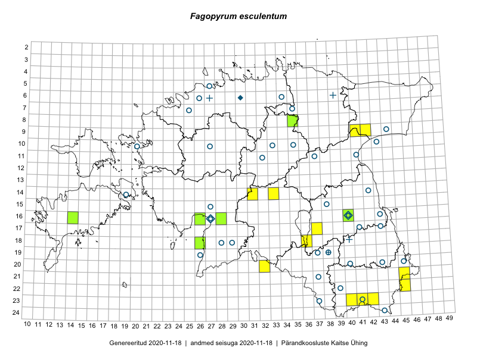

Fagopyrum esculentum
Uuendatud: 2016-12-01
Kaardile koondatud taksonid: Fagopyrum esculentum Moench

Kaart põhineb 12 kirjel, neist vaatlusi 11 ja eksemplare 1.
Viited andmebaasikirjetele
- Peedu Saar, Ott Luuk: 2015-08-12: 23-42: GPS punkt
- Helle Mäemets, Mare Leis: 2015-06-24: 18-36: GPS punkt
- Ott Luuk, Eerik Leibak: 2016-08-05: 09-42: ala
- Ott Luuk, Eerik Leibak: 2016-08-05: 09-41: ala
- Karin Kikas, Peedu Saar: 2016-08-18: 22-45: GPS punkt
- Meeli Mesipuu, Ott Luuk: 2016-09-18: 20-32: ala
- Ott Luuk, Meeli Mesipuu: 2016-09-18: 20-32: GPS punkt
- Peedu Saar, Mari Metsoja: 2016-07-20: 18-36: GPS punkt
- Ott Luuk, Eerik Leibak: 2016-08-05: 09-41: GPS punkt
- Ott Luuk, Eerik Leibak: 2016-08-05: 09-42: GPS punkt
- Ott Luuk, Sander Laherand, Susanna Vain: 2016-06-14: 23-40: GPS punkt
- Jana-Maria Habicht: 2015-07-14: 08-35: GPS punkt